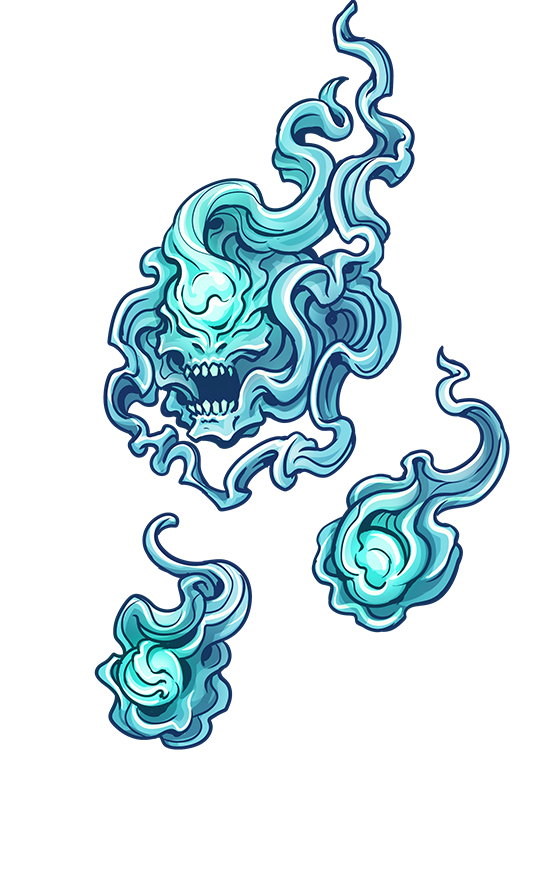
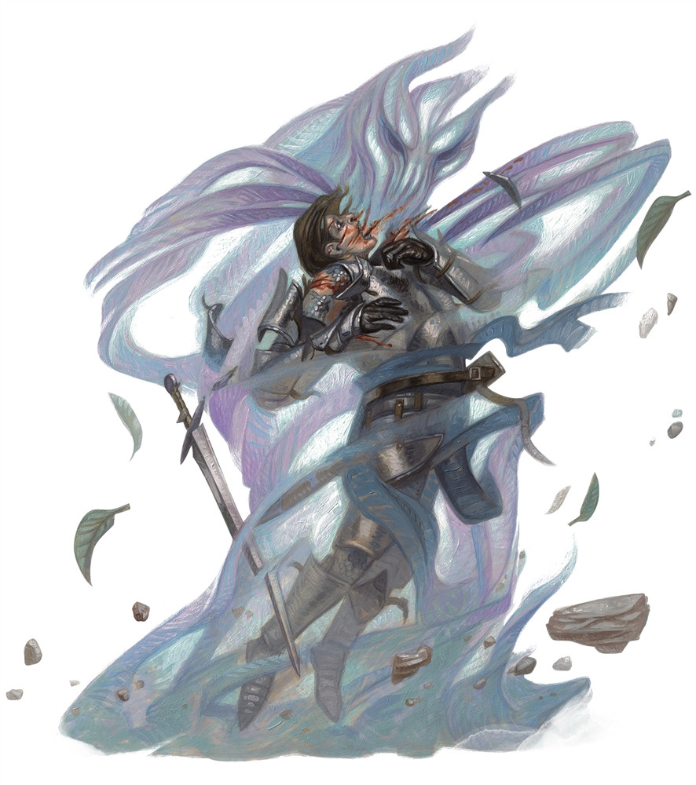

|

Feu folletwillowisp.png
Mort-vivant de taille TP, chaotique mauvais
Classe d'armure 19
Points de vie 22 (9d4) Vitesse 0 m, vol 15 m (stationnaire) FOR
1 (-5) DEX
28 (+9) CON
10 (+0) INT
13 (+1) SAG
14 (+2) CHA
Immunités aux dégâts foudre, poison11 (+0) Résistances aux dégâts acide, feu, froid, nécrotique, tonnerre ; contondant, perforant et tranchant d'attaques non magiques Immunités aux états à terre, épuisement, agrippé, paralysé, empoisonné, entravé, inconscient Sens vision dans le noir 36 m, Perception passive 12 Langues les langues qu'il connaissait de son vivant Puissance 2 (450 PX) Absorption de vie. Au prix d'une action bonus, le feu follet peut prendre pour cible une créature qu'il peut voir se trouvant à 1,50 mètre de lui, ayant 0 point de vie et qui est toujours vivante. La cible doit réussir un jet de sauvegarde de Constitution DD 10 contre cette magie ou mourir. Si la cible meurt, le feu follet récupère 10 (3d6) points de vie. Éphémère. Le feu follet ne peut rien porter ou ni transporter. Déplacement intangible. Le feu follet peut se déplacer à travers d'autres créatures ou des objets comme s'il traversait un terrain difficile. Il subit 5 (1d10) dégâts de force s'il termine son tour à l'intérieur d'un objet. Illumination variable. Le feu follet émet une lumière vive dans un rayon de 1,50 à 6 mètres, et une lumière faible sur un nombre supplémentaire de mètres égal au rayon choisi. Le feu follet peut modifier le rayon par une action bonus. Actions
Secousse. Attaque au corps à corps avec un sort : +4 au toucher, allonge 1,50 m, une créature. Touché : 9 (2d8) dégâts de foudre. Invisibilité. Le feu follet (ainsi que son illumination) devient invisible par magie jusqu'à ce qu'il attaque, utilise son Absorption de vie, ou que sa concentration se termine (comme s'il se concentrait sur un sort). |

Traqueur invisibleÉlémentaire de taille M, neutre
Classe d'armure 14
Points de vie 104 (16d8 + 32) Vitesse 15 m, vol 15 m (stationnaire) FOR
16 (+3) DEX
19 (+4) CON
14 (+2) INT
10 (+0) SAG
15 (+2) CHA
Compétences Discrétion +10, Perception +811 (+0) Résistances aux dégâts contondant, perforant et tranchant d'attaques non magiques Immunités aux dégâts poison Immunités aux états épuisement, agrippé, paralysé, pétrifié, empoisonné, à terre, entravé, inconscient Sens vision dans le noir 18 m, Perception passive 18 Langues aérien, comprend le commun mais ne peut pas parler Puissance 6 (2300 PX) Invisibilité. Le traqueur est invisible. Traqueur irréprochable. Le traqueur reçoit une cible de la part de son invocateur. Le traqueur connaît la direction et la distance qui le sépare de sa cible tant qu'ils se trouvent tous les deux dans le même plan d'existence. Le traqueur sait également où se trouve son invocateur. Actions
Attaques multiples. Le traqueur invisible effectue deux attaques de coup. Coup. Attaque au corps à corps avec une arme : +6 au toucher, allonge 1,50 m, une cible. Touché : 10 (2d6 + 3) dégâts contondants. |